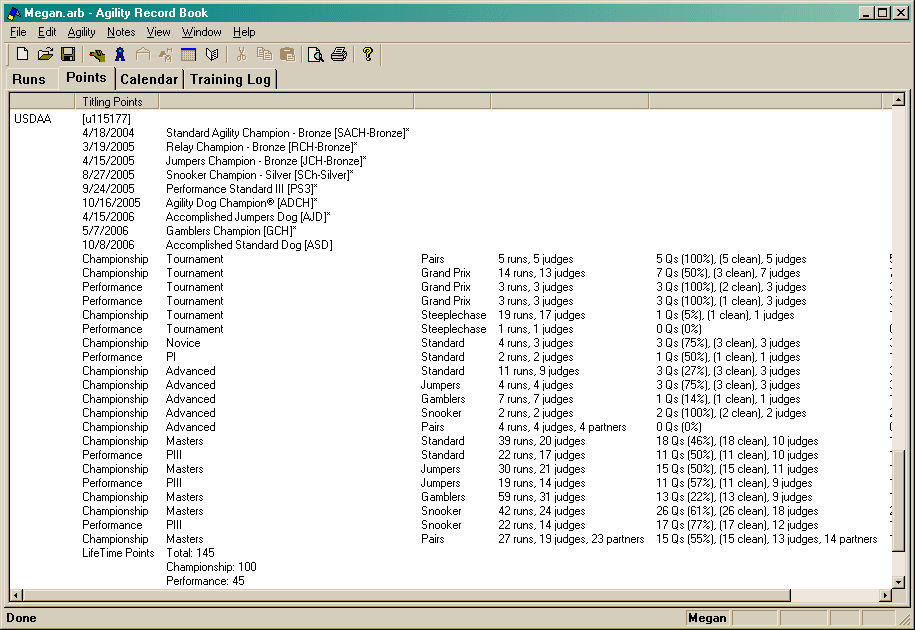
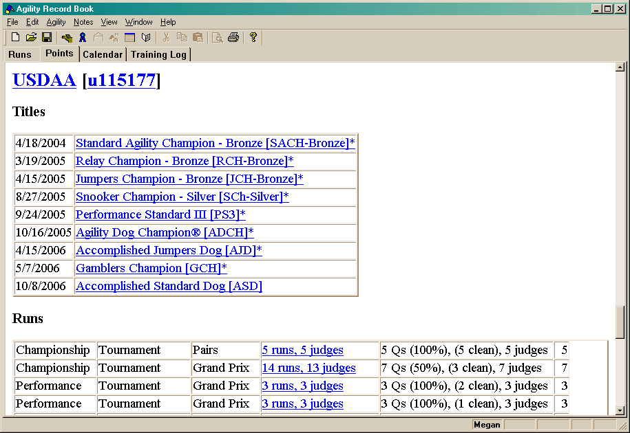

[If you press the Copy button, it will copy all the data in this dialog to the clipboard in a tab delineated style suitable for pasting into a spreadsheet.]
The Points tab is made up of one main window. Depending on the options set, this window will have one of two appearances: a list or html.
The list looks like:

If you right-click on an item (or press the "Window Menu" key on the keyboard),
a context menu will appear
allowing you to perform a number of actions.
The html view looks like:

This window also has a context menu, but it is the normal one you will find
in a web browser.
In order to perform any of the actions you might find in the list's context
menu, you must either click on a link in the html or select a menu item from
the main menu.
The following comments apply to both variants of this view.
This window only presents information to you. You can adjust what is visible by modifying the filter in the viewing preferences.
One thing to note about the view preferences: Only the venue and date portions of the filter apply to this view. The Qualifying status of runs is ignored. This is done in order to compute the qualifying rate. Since this view is designed to show how many points you have earned, it doesn't make much sense to use the qualifying status of the filter!
There is some additional information that can be accessed in this view. In the Html-style window, lines with additional information are obvious since they have a familiar link to follow. In the List-style window, you must either double-click the line, or use the keyboard and press either space or enter to view the current line.
Note: Not all lines in the List-style Points view have details. If you attempt to open one that does not, it will beep at you.